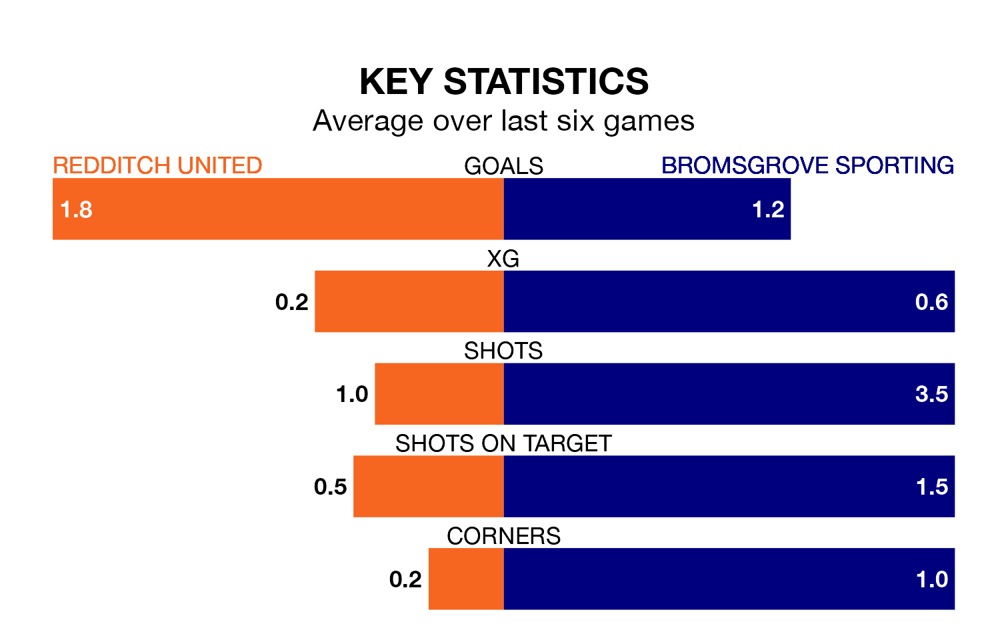

Redditch United host Bromsgrove Sporting on Saturday at the Valley Stadium in Southern League Premier Central.
In their last league match, on Monday, Redditch beat Hitchin Town 3-0 at home.
Bromsgrove Sporting lost, 1-0 at home against Royston Town on January 13.
Redditch are third in the table after 26 games, of which they have won 14 and drawn six, earning 48 points.
Bromsgrove Sporting are 14 places behind United in 17th, with eight wins and six draws putting them on 30 points.
With 30 goals in 25 games so far this season, the visitors are scoring at below the league average rate with 1.2 goals per game. But they are conceding fewer than average too, letting in 33 goals at a rate of 1.3 per game.
The home side, meanwhile, are above average scorers, with 1.8 goals per game, compared to a league average of 1.5. They have conceded 1.3 goals per game.
In the last 10 years, Redditch and Bromsgrove Sporting have played each other on six occasions. Redditch won three of them, Bromsgrove Sporting two, and they drew once.
On average, Redditch scored 1.2 goals and Bromsgrove Sporting 1.7 in those matches.
Their last meeting was on August 5, when Redditch won 2-1 away.
Redditch are in good form in Southern League Premier Central, with four wins and a draw from their last six games.
With two wins and three draws over that period, Bromsgrove Sporting's form is worse – they have taken nine points from 18, compared to Redditch's 13.
Updated: 13:09 (UTC), 17/01/24